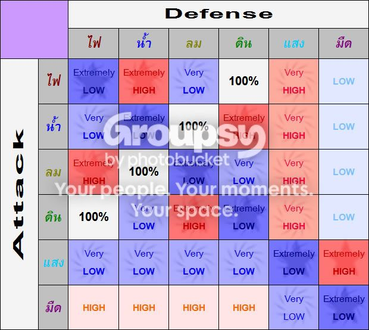

Re: Q & A And Talk Gunner Striker [Iris Card ของเล่นคนรวย ?]
Donlanai เขียน:
ผมขอทิ้งสูตรง่ายๆไว้เลยละกัน
*ATK ที่ว่านี่รวมการโจมตีทั้งปกติและเวทย์นะครับ
*สาปแช่แข็ง ทำให้มอนกลายเป็นธาตุน้ำ ค่าธาตุ =100
*สาปหิน ทำให้มอนกลายเป็นธาตุดิน ค่าธาตุ = 100
*ค่า EVC = ค่าธาตุ EVC เท่าไร = ธาตุนั้นเลเวล X ดูจากตาราง
1.กรณีที่เป็น Extremely High / Very High
ความแรง = ATK(รวมสกิล) + ค่า%ตาราง + ค่าธาตุ
ตัวอย่าง1: ลม 15 vs ไฟ 100 (มอนธาตุไฟ) - ตบด้วย Blow Lv5 (260%)
ความแรง = ATK+260%สกิล + 350%(ตาราง) + 15%(ค่าธาตุ) = ATK+625%
ตัวอย่าง2: ลม 20 vs แสง 100 - ตบด้วย Blow Lv5(260%)
ความแรง = ATK+260%สกิล + 200%(ตาราง) + 20%(ค่าธาตุ) = ATK+480%
ตัวอย่าง3: ลม 20 vs ไฟ 25(คนใส่เกราะไฟ) - ตบด้วย Blow Lv5(260%)
ความแรง = ATK+260%สกิล + 160%(ตาราง) + 20%(ค่าธาตุ) = ATK+440%
*หมายเหตุ เทียบตารางเลเวลธาตุ ค่าธาตุไฟ 25 = มีเลเวลธาตุไฟ = Lv5
2.กรณีที่เป็น High
ความแรง = ATK(รวมสกิล) + ค่า%ตาราง + ค่าธาตุหารด้วย4
ตัวอย่าง1: มืด 40 vs ไฟ 100 - ตบด้วย Blow Lv5(260%)
ความแรง = ATK+260% + 200%(ตาราง) + (40/4)% = ATK+470%
ตัวอย่าง2: มืด 40 vs ไฟ 25 - ตบด้วย Blow Lv5(260%)
ความแรง = ATK+260% + 125%(ตาราง) + (40/4)% = ATK+395%
3.กรณีที่เป็น Low,Very Low,Extremely Low
ความแรง = ATK(รวมสกิล)ถูกลดลงเหลือค่าตามตาราง และไม่สนใจค่าธาตุ
ตัวอย่าง1: โจมตี 200 ธาตุแสง 20 vs ไฟ 100 ด้วยสกิล Blow lv5(260%) - Very Low
ความแรง = 520 ถูกปรับเหลือ 0% ตามตาราง = ATK 0
ตัวอย่าง2: โจมตี 200 ธาตุลม 25 vs มืด 100 ด้วยสกิล Blow lv5(260%) - Low
ความแรง = 520 ถูกปรับเหลือ 40% ตามตาราง = ATK 208
ดังนี้ครับ


เอาสูตรไปนั่งขบกันเองละกัน...

 สกิลลูกดอกแปรธาตุจะทำได้สูงกว่าเวท 10 อะ เวทได้ 50 สไตรเกอร์จะทำได้ 60
สกิลลูกดอกแปรธาตุจะทำได้สูงกว่าเวท 10 อะ เวทได้ 50 สไตรเกอร์จะทำได้ 60 
 ยิ่งเป็นคนหาเงินในเกมเอง แทบไม่ได้รวยเติมเงินเปิดบัตรมาขายของ เสียดายชะมัด....
ยิ่งเป็นคนหาเงินในเกมเอง แทบไม่ได้รวยเติมเงินเปิดบัตรมาขายของ เสียดายชะมัด.... สำหรับอะบิลิตี้ มันแย่ก็ตรงที่มันดันบอกแต่เวคเตอร์ แต่มองไม่เห็นคุณสมบัติจริง จนกว่าจะได้ใส่ลงไปในอาวุธ ไม่เหมือนกับธาตุ ที่เห็นชัดๆเลย
สำหรับอะบิลิตี้ มันแย่ก็ตรงที่มันดันบอกแต่เวคเตอร์ แต่มองไม่เห็นคุณสมบัติจริง จนกว่าจะได้ใส่ลงไปในอาวุธ ไม่เหมือนกับธาตุ ที่เห็นชัดๆเลย